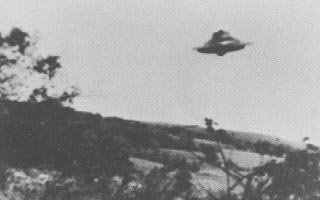
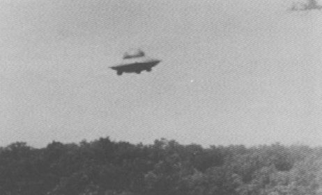

Trudel prétend être en contact mental avec le peuple de l'espace qui lui envoie
des messages indiquant l'endroit où ils vont apparaître.
1er témoignage
Une des 6 photographies prises par Trudel le 9 novembre
Le , Trudel est assis dans sa voiture sur Elder Ballou Meetinghouse Road et scrute les
cieux à la recherche de l'objet lumineux étrange qu'il a vu plusieurs fois de jour comme dans l'obscurité. Soudain,
il repère une lueur jaune-or montant de derrière l'horizon. La lumière ou l'objet lumineux se déplace très lentement
à travers le ciel. Il prend 6 clichés avant qu'il ne disparaisse Cas n° 27, Projet Blue Book/FBI/USAF.
2ᵉ témoignage
Une des photographies de Trudel le 10 Juin à Woonsocket Est

Le , alors qu'il roule en voiture à Woonsocket Est (Rhode Island), Trudel repère un objet volant metallique argenté brillant en
déplacement pendulaire. Il arrête sa voiture, saisit son appareil photo, et prend 7 clichés de la soucoupe (ci-contre) avant
que celui-ci ne disparaisse. Green Beckley, Timothy: Flying Saucers, décembre 1970, p. 26.
3ᵉ témoignage
Photographie de Trudel le 16 Juin à Woonsocket Est
